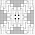
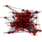
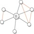
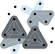

News: Archive
-
September 2, 2015
New open source release! Check out CONCUSS: Combatting Network Complexity Using Structural Sparsity on github.
-
August 31, 2015
Extended Abstract Graph theoretical analysis of intramuscular fat in the supraspinatus. with undergraduates Yang Ho and Brandon Mork accepted at BMES Annual Meeting 2015!
-
July 30, 2015
Paper Multi-Level Anomaly Detection on Time-Varying Graph Data accepted at ASONAM 2015!
-
July 15, 2015
Dr. Sullivan is co-chairing the 2016 SIAM Workshop on Network Science!
-
July 1, 2015
Paper On the Threshold of Intractability accepted at ESA 2015!
-
June 15, 2015
Dr. Sullivan selected for the NC State Chancellor's Faculty Excellence Program as a member of the Data-Driven Science Cluster
-
June 3, 2015
Talk from SIAM Workshop on Network Science is now online!
-
June 1, 2015
Welcome to our summer undergraduate researchers: Yang Ho, Clayton Hobbs, and Nishant Rodrigues! (now on the People page.)
-
May 4, 2015
New preprint posted to ArXiv: On the Threshold of Intractability.
-
April 14, 2015
Undergrad researchers Brandon Mork and Clayton Hobbs presented posters at the NC State Undergraduate Research Symposium.
-
April 1, 2015
We're on Twitter @BlairDSullivan (despite the date, this is no joke).
-
March 27, 2015
Abstract selected for talk (from a record 415 submissions!) at NetSci 2015!
-
February 26, 2015

Abstract selected for presentation at SIAM Workshop on Network Science
-
February 6, 2015
Paper Zig-Zag Numberlink is NP-Complete accepted (Journal of Information Processing)!
-
January 23, 2015
Dr. Sullivan joined other Moore Investigators in Data-Driven Discovery 12-2pm Pacific in hosting a Reddit Science AMA
-
January 20, 2015
Welcome to our new undergraduate researchers, Brandon Mork and Clayton Hobbs! (now on the People page!)
-
January 2, 2015
Postdoc Position Available! More information available here.
-
December 15, 2014
ICERM is hosting a Workshop on the Mathematics in Data Science in July 2015 - apply to participate! (Dr. Sullivan is one of the invited speakers)
-
November 7, 2014
New preprint posted to ArXiv: Tree decompositions and social graphs
-
October 23, 2014
New preprint posted to ArXiv: Zig-Zag Numberlink is NP-Complete
-
October 17, 2014
New preprint posted to ArXiv: Multi-Level Anomaly Detection on Streaming Graph Data
-
October 2, 2014
Dr. Sullivan named Moore Investigator in Data-Driven Discovery!
-
October 1, 2014
Super excited to start work on our new DARPA GRAPHS project, PARSiNG: Parameterized Algorithms Respecting Structure in Noisy Graphs!
-
September 30, 2014
New preprint posted to ArXiv: Hyperbolicity, Degeneracy, & Expansion of Random Intersection Graphs.
-
September 19, 2014
Paper accepted to ICDM 2014: Locally Estimating Core Numbers (M. P. O'Brien and B. D. Sullivan)
-
September 5, 2014
Fun (5-minute) RTP 180° talk now on Youtube!. Associated slides available on the NCDS blog.
-
August 15, 2014
Welcome to our new Ph.D. students, Timothy Goodrich and Drew van der Poel!